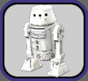
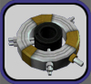
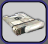

| 
Efon's
Droids and Vehicles is committed to supplying the pilots
of Ahazi with the most reliable and well-constructed spaceflight
tools in the galaxy. A wide assortment of astromech droids, flight
computers, and accessories can be found
on our droid vendor in
Tranquility, Naboo (northeast of Theed) at -3427,5851.
Current
Spaceflight Products in Stock:
|  |
R5
Astromech Droids
These
are required for maximum benefit to pilots of the Z-95, Y-Wing,
and X-Wing starfighters.
The basic astromech droids are available in six levels, one
for each of the pilot certifications. |
|  |
Flight
Computers
A portable
data storage device for most ships to hold
flight command programs.
There are six levels of flight computer data capacity: v1:
20, v2: 40, v3: 70, v4:
110, v5: 125, and v6:
150. |
|  |
Unprogrammed
Droid Command Modules
These are burnable data chips that are programmed to hold
one droid program among the pilot's learned commands. After
use, the "ready chip" is transferred to the droid
or flight computer datapad. |
NOTE:
Astromech deeds and Flight Computers will display the astromech
certification that is required to use it. Please make sure you
have the appropriate certification to use the droid/computer
you buy (i.e. you won't be able to use an astromech droid with
lvl 6 data when you first start out).
Spaceflight
Products
FAQ:
What
droid products do I need for spaceflight?
Most ships require a flight computer for using programmed
commands in flight. The exceptions are the Z-95,
Y-Wing, and X-Wing starfighters; which require an astromech
droid. A pilot can only use an astromech or flight computer
that he/she is certified to use (i.e. a Novice Pilot can
only use a v1 flight comp. or level 1 astromech). Be sure
to activate the astromech/flight computer from your inventory.
How
do I program pilot commands into my astromech/flight computer?
Purchase an Unprogrammed Droid Command Module, and use the
radial menu on the chip to 'Program Droid Memory Chip'. Take
the created Ready Chip and 'Transfer Memory Chip to Datapad'.
The data will be placed in your datapad, and can be dragged into
the astromech/flight computer's datapad from there.
How
do I access the pilot commands stored my astromech/flight computer?
At
the ship management terminal, associate
your astromech/flight computer to the ship (note that ship must have
droid interface installed). Programmed pilot commands stored in the
associated astromech/flight
computer are performed just like character
abilities, they can
be dragged onto your toolbar from the astromech abilities tab or
typed as a command in the chat bar.
How
do I gain the ability to use higher level astromechs/flight
computers?
Train
in the Droid Interface/Astromech Management skill. Each level
allows a higher level of Astromech Certification.
What
affects the performance of the astromechs/flight computers?
The
level and quality of the Shipwright-crafted Droid Interface affects
the speed at which you can perform droid commands in space.
Will
I be able to use an astromech I've associated with a
ship when I'm on the ground?
Yes. When not in space, the droid appears in your datapad as
normal, and you will be able to use all the functions the droid is
equipped with.
Where
do I get these fine products?
Efon's Droids and Vehicles has all levels of flight computers
and astromechson our
vendors in Tranquility, Naboo (1.6 km NE of Theed) at
-3427,5851 and southwest of Mos Entha, Tatooine at 630,2786.
Home
| Droids
and Modules | Vehicles | Current
Prices | Current Specials | Locations
| FAQs
| Other Products
Original content © 2003-12 theron design.
Star Wars Galaxies related content copyright Sony Online Entertainment.
This content may not be copied, reproduced or distributed without
the express written approval of the author.
|